순간 담기, 음성 메모, 장소 바로가기를 Apple Watch에서 바로 쓸 수 있습니다.
사진·장소·시간을 근거로 기기 안의 AI가 여정의 이야기를 제안합니다.
“골목”, “노을”, “시장” 같은 자연어 질의를 의미 태그로 이해합니다.
대량 라이브러리에서도 끊기지 않고, 첫 분석 시간이 자체 측정 기준 약 15% 짧아졌습니다.
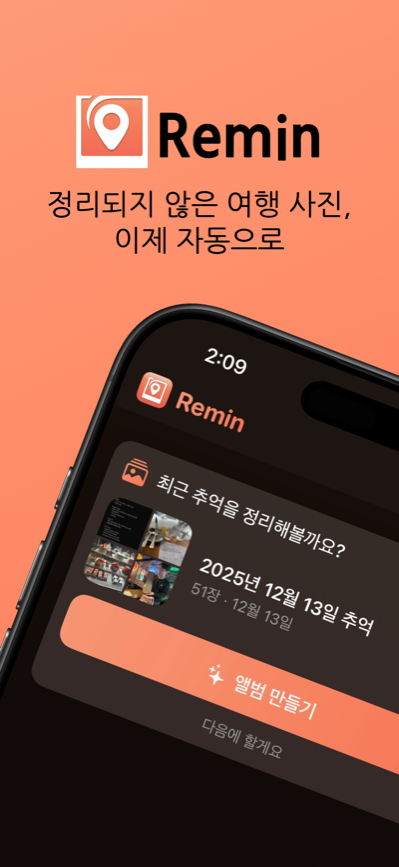
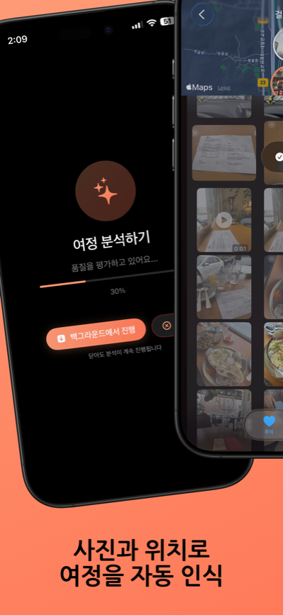
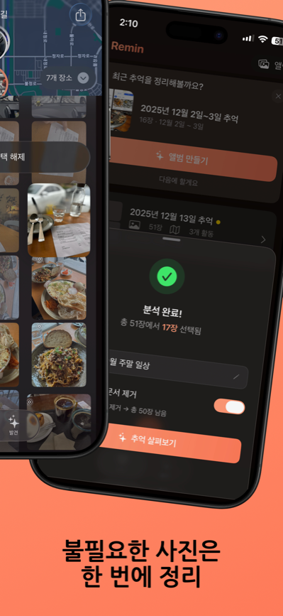
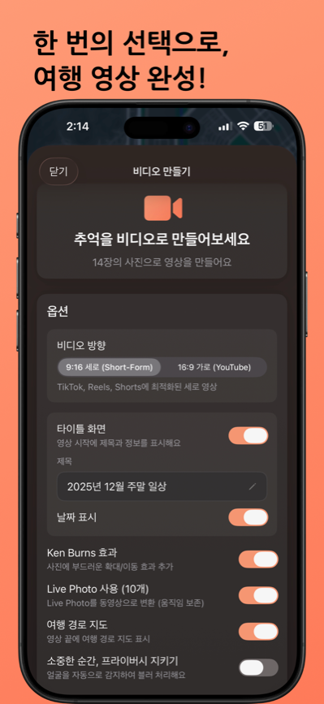
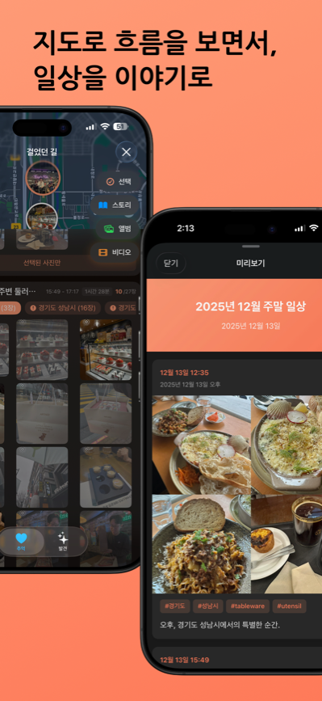

큰 화면에서 여행의 순간을 더 깊이 감상하세요
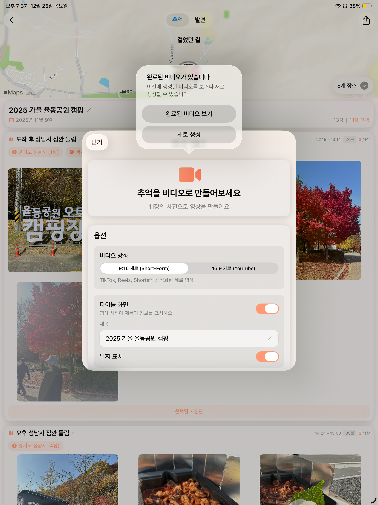
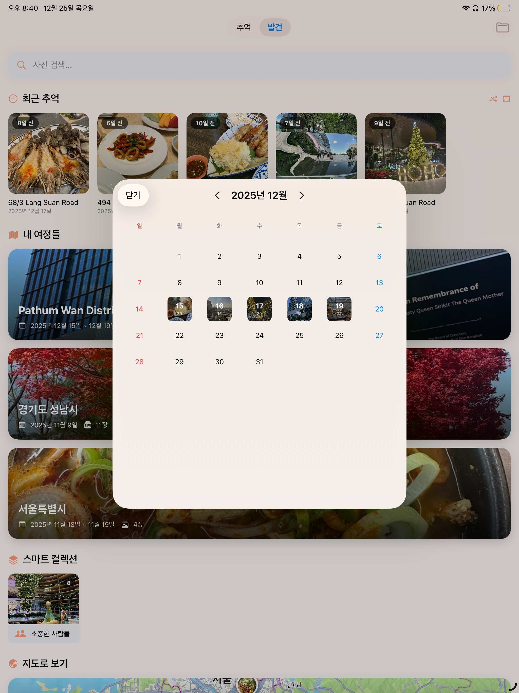
휴대폰이 주머니에 있을 때 스쳐가는 순간을 위해
지금 보고 있는 장면을 손목에서 담아두면 iPhone의 여정에 합쳐집니다.
그 장소의 느낌을 말로 남기면 기기 안에서 글로 옮겨 그 지점에 붙습니다.
장소와 거기서 필요한 QR(교통 패스, 쿠폰, 회원 코드)을 등록해두면 도착할 때 워치가 꺼내 보여줍니다.
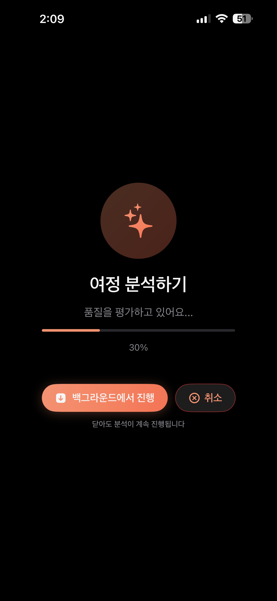
시간 → GPS → 시각 유사도 → 품질. 4가지 기준으로 베스트 컷을 자동 선별합니다.
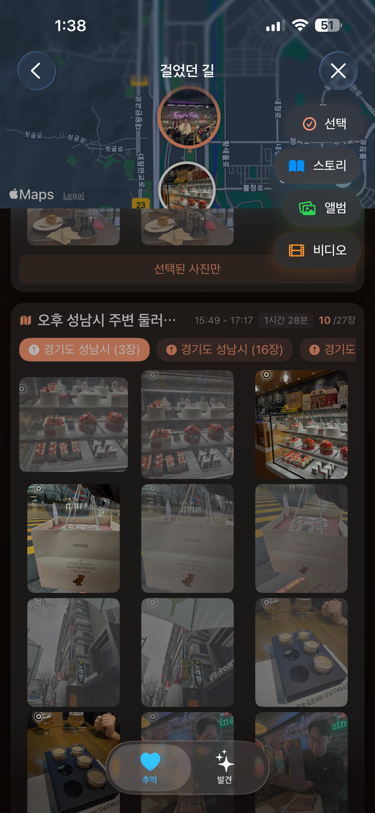
이동 경로와 함께 그곳에서의 추억을 지도 위에 펼쳐봅니다.
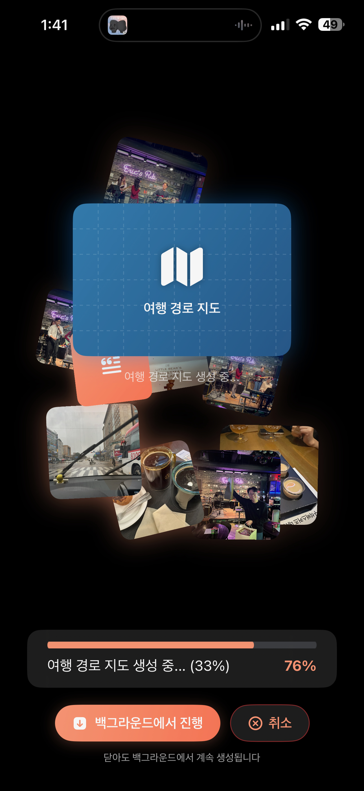
여행 사진으로 시네마틱 영상을 자동 생성합니다.
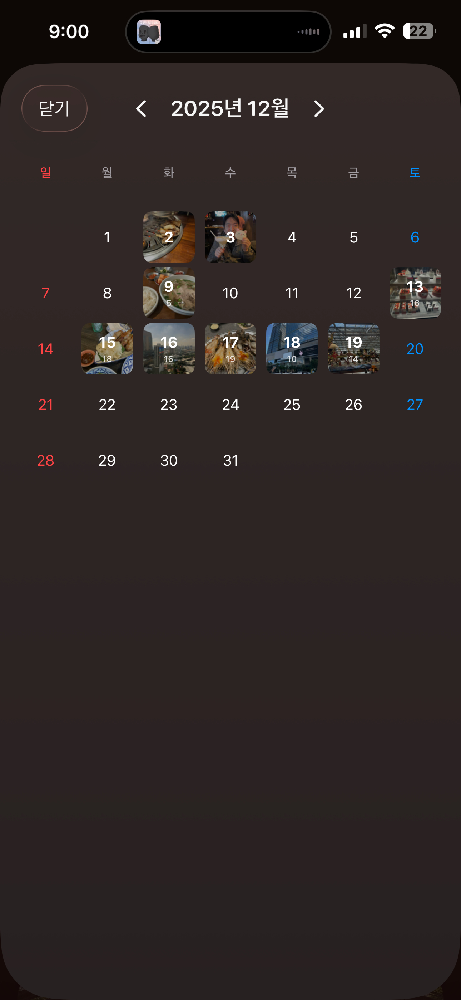
캘린더로 날짜별 사진을 탐색하고, 1년 전 같은 날을 되돌아봅니다.
여행 사진이 담긴 앨범을 선택하세요.
Remin이 시간과 장소를 분석해 정리합니다.
완성된 나만의 여행기를 감상하세요.
iPhone · iPad 지원 (Mac 호환) • 온디바이스 처리